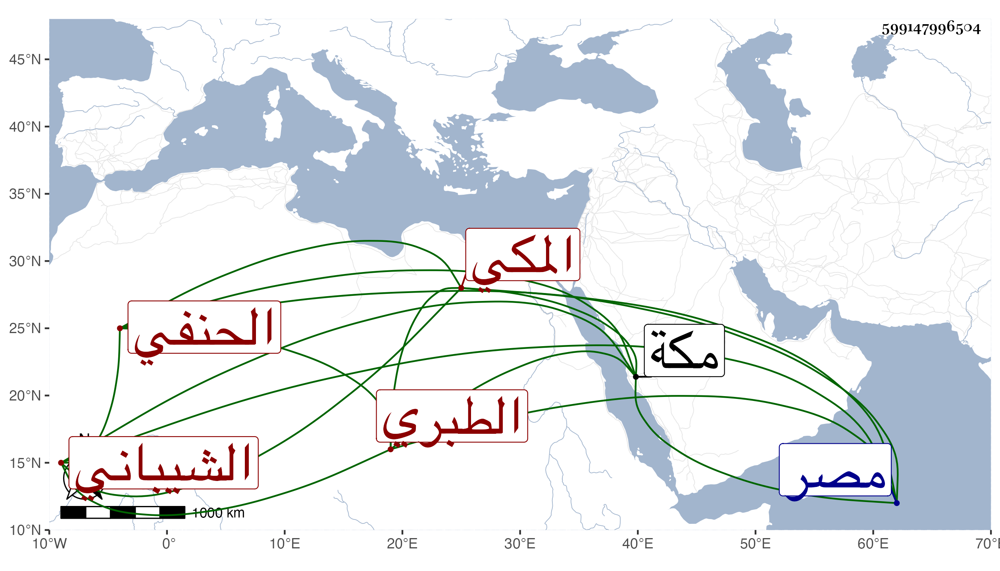

0902Sakhawi.DawLamic.ITO20230111-ara1.EIS1600.599147996504
Biography ID: 599147996504
508
محمد بن جار الله بن صالح بن أبي المنصور أحمد بن عبد الكريم بن أبي المعاي يحيى بن عبد الرحمن بن علي بن الحسين بن علي بن الحسين بن محمد بن شيبة ابن إياد بن عمرو بن العلاء بن مسعود الجمال بن الجلال الشيباني الطبري الأصل المكي الحنفي الماضي أبوه ، ذكره الفاسي أيضا وقال سمع من بعض شيوخنا بمكة وحفظ بعض المختصرات في الفقه واشتغل بالعلم وسافر مع أبيه إلى مصر في موسم سنة أربع عشرة . قلت فسمع مع ابني ابن الضياء وأكبرهما زوج أخته اسية على ابن الكويك أشياء منها شرح معاني الآثار للطحاوي . قال الفاسي : ومات بها بخانقاه سعيد السعداء في آخر سنة خمس عشرة في ذي الحجة فيما أحسب ودفن بمقبرة الصوفية بها وقد جاز العشرين وكان خيرا انتهى . وكذا أرخ وفاة والده كما تقدم .
